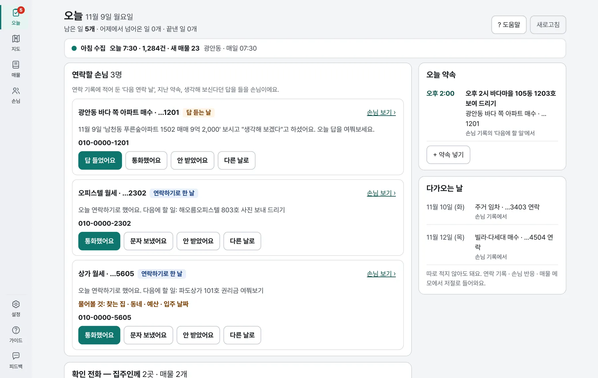
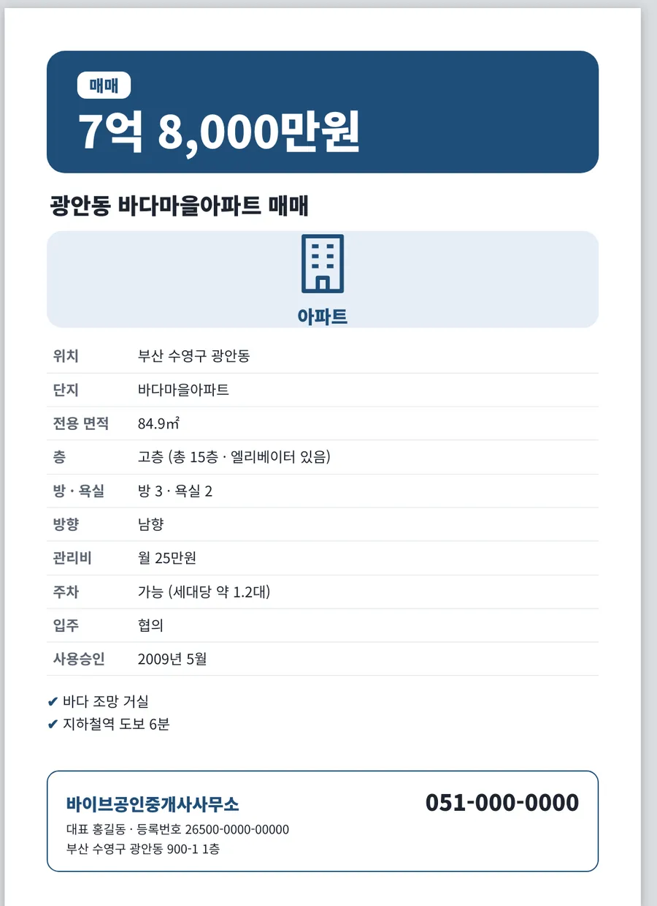
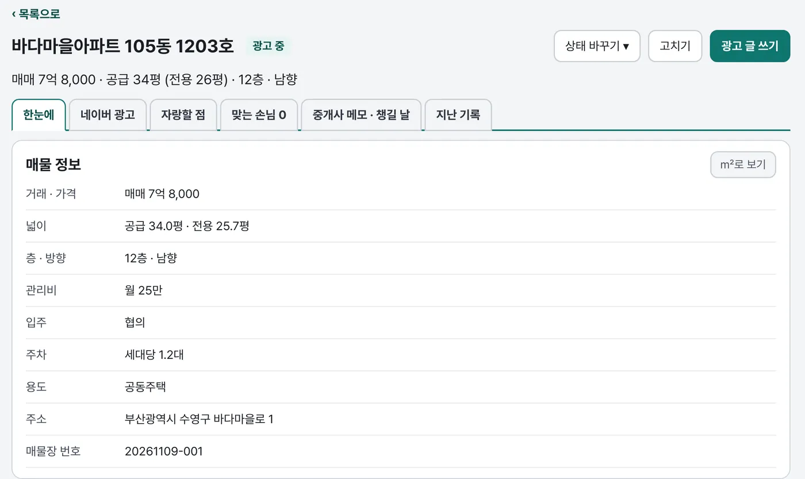
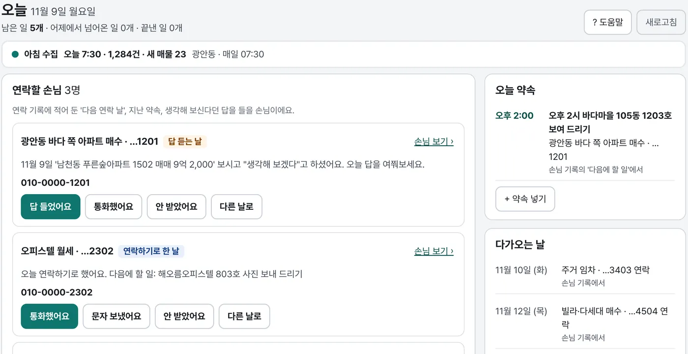
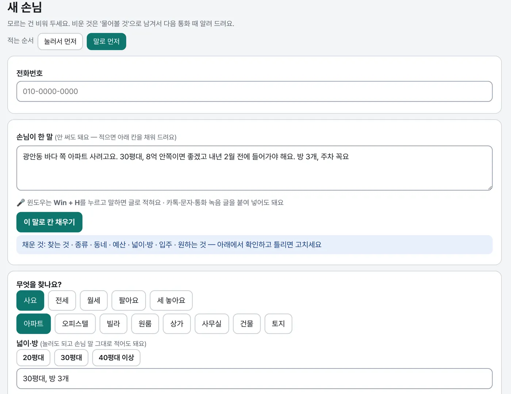
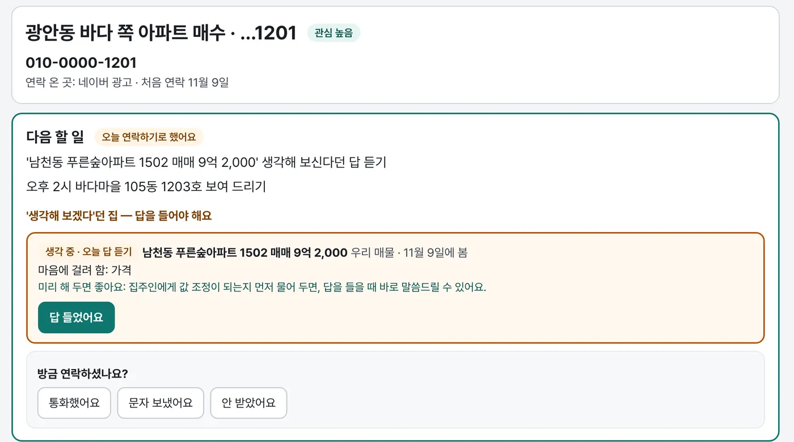
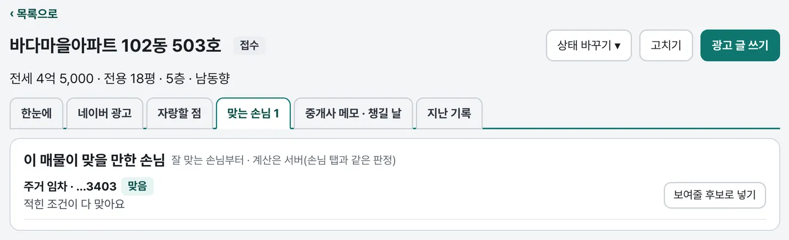

20년 넘게 현업에 있는 공인중개사가 직접 만들었어요
매물 · 손님 정리,
아침마다 알아서 챙겨 두는
중개사무소 프로그램
주소만 넣으면 건축물대장이 채워지고, 매일 아침 우리 동네 매물을 모아 두고, 오늘 연락할 손님을 먼저 보여 드려요.


실제 프로그램 화면 · 이름 · 매물 · 번호는 꾸민 것이에요
이런 사무소에 맞아요
하루에 몇 번씩 하는 일을 줄여 드려요
사무소 문을 열기 전에
사장님보다 PC 가 먼저 출근해요
정한 시각이 되면 우리 동네 매물을 모으고, 오늘 연락할 손님과 확인 전화할 매물을 한 화면에 정리해 둬요. 출근해서 커피 한 잔 하며 훑어보시면 돼요.
오늘 7:30 · 우리 동네 매물 모음 끝지금 베타 판에 들어 있는 것
이렇게 줄여 드려요
아래 화면은 모두 실제 프로그램을 찍은 것이에요. 이름과 매물만 꾸몄어요. 누르면 크게 보여요.
주소만 넣으면 매물 등록
지번이나 단지 이름을 넣으면 건축물대장에서 면적 · 층 · 용도 · 사용승인일을 불러와 칸을 채워요.
- 공공데이터 키를 따로 받으실 필요가 없어요
- 광고에 꼭 필요한 칸이 비면 '손볼 것'으로 알려 드려요
- 평 · ㎡ 를 눌러서 바꿔 볼 수 있어요

아침마다 우리 동네 매물을 모아 둬요
처음에 사무소 동과 둘레 동을 한 번 고르면, 매일 아침 PC 가 알아서 그 동네 네이버 매물을 모아 두고 새로 나온 매물과 내려간 매물을 알려 드려요.
- 프로그램 창을 열어 두지 않아도 정한 시각에 모아요
- PC 가 꺼져 있었으면 켜지자마자 모아요
켜면 '오늘' 한 화면
오늘 연락할 손님, 집주인께 확인 전화할 매물, 오늘 약속이 먼저 나와요. 못 한 일은 내일 아침 다시 올라와요.
- [통화했어요] 한 번 누르면 기록이 남아요
- '생각해 볼게요' 하신 손님은 답 들을 날에 알려 드려요
- 손님 기록에 '오후 2시'라고 적으면 오늘 약속에 저절로 들어가요

손님 메모만 붙여 넣으면 칸이 채워져요
카톡이나 휴대폰에 적어 둔 손님 메모를 그대로 붙여 넣으면, 찾는 집 · 동네 · 예산 · 입주 날짜를 알아서 골라 칸에 넣어 드려요. 고칠 것만 고치시면 돼요.
- 타자가 불편하면 윈도우 받아쓰기(Win+H)로 말해도 돼요
- 모르는 칸은 '물어볼 것'으로 남겨 다음 통화 때 알려 드려요

손님과 매물을 서로 맞춰 봐요
손님을 고르면 조건에 맞는 매물을, 매물을 고르면 맞는 손님을 바로 보여 드려요. 보여 드린 집 · 생각해 보시겠다던 집 · 마음에 걸려 하신 점까지 손님 한 장에 모여요.
- 조건 하나만 다른 매물도 따로 모아 드려요
- 손님 목록에는 이름 대신 '찾는 집 + 뒷 4자리'로 보여요


광고 글 · 유리창 광고
매물 정보로 광고 글 요청문을 만들어 드려요. 쓰시는 AI(ChatGPT · Claude)에 붙여 넣고 답을 다시 붙이면, 표시 · 광고 규정에 걸릴 말을 검사해 매물특징 · 설명으로 나눠 저장해요.
- 유리창에 붙일 A4 광고가 바로 인쇄돼요 (디자인 3가지 · 색 4가지)
- 호수 · 지번 · 연락처는 광고에 들어가지 않아요
- 사무소 이름 · 등록번호 칸이 비면 인쇄 전에 알려 드려요
VIBE 시리즈
앞으로 붙일 것
제 사무소에서는 이미 쓰고 있는 것들이에요. 다른 사무소 PC 에서도 동작하게 다듬어서 차례로 붙일 거예요.
VIBEmap 에 등록한 매물을 더블클릭하면 매물 정보를 불러와 광고 사이트에 등록해 드려요.
매물 장부를 불러와 블로그 글을 쓰고, 건물 사진을 자동으로 찾아 카드 이미지까지 만들어 드려요.
통화 내용을 분석해서 매물을 자동으로 등록하고, 아침마다 보여 드려요.
같은 단지 · 비슷한 면적의 실거래가를 모아 해당 매물의 적정가 범위를 보여 드려요.
만든 사람
제 사무소에서 쓰려고 만들었어요
부산에서 20년 넘게 중개사무소를 하고 있습니다.
아침이면 네이버를 열어 우리 동네에 새로 나온 매물과 내려간 매물을 하나하나 훑고, 낮에는 손님 전화를 받으며 여기저기 메모를 남기고, 새 매물을 받으면 건축물대장을 떼어 면적 · 층 · 준공을 옮겨 적은 뒤 광고 글을 또 씁니다. 그러다 보면 "다음 주에 다시 연락드릴게요" 해 놓고 놓치는 손님이 생깁니다. 이 일들이 지겨워서, 제 사무소에서 쓰려고 프로그램을 직접 만들었습니다.
쓰면서 불편한 곳을 하나씩 고쳐 왔고, 지금도 매일 이 프로그램으로 하루를 시작합니다.
이제 다른 사무소에서도 쓸모가 있는지 알고 싶습니다. 한 달 동안 편하신 만큼만 써 보시고, 좋은 점보다 불편한 점을 솔직하게 말씀해 주세요. 그 말씀으로 고쳐서 정식판을 만들겠습니다.
— 제14회 공인중개사
걱정하실 부분
손님 정보는 만든 사람도 볼 수 없어요
같은 중개사가 만든 것이라 더 궁금하실 수 있어요.
손님 이름 · 전화번호 · 메모와 적어 두신 매물은 사무소 PC 에만 저장돼요. 만든 사람에게 오는 것은 베타 코드, 누르신 👍/👎와 한 줄 의견, 기능을 쓴 횟수뿐이에요.
카카오 · 공공데이터 키를 받으실 필요가 없어요. 건축물대장과 지도 찾기는 VIBEmap 서버가 국토부 · 카카오에 대신 물어봐 드려요. 어느 사무소가 어느 건물을 찾았는지는 서버에 남기지 않아요.
내 계정 폴더에 설치돼요. 다 쓰시고 지워도 넣어 두신 자료는 PC 에 남아요.
베타 진행
베타는 이렇게 진행돼요
- 신청
사무소 정보와 지금 일하는 방식을 여쭤봐요. 대표 휴대폰으로 인증번호 문자를 받아요. 휴대폰으로도 돼요.
- 승인 · 베타 코드
등록번호로 개업 공인중개사인지 확인하고, 승인되면 문자로 알려 드려요. '코드 다시 보기'에서 코드를 확인하세요.
- PC 에 설치
사무소 윈도우 PC 에서 내려받아 설치하고, 처음 켤 때 코드를 넣어요.
- 한 달 써 보기
가끔 오른쪽 아래 한 줄 질문에 👍/👎 만 눌러 주세요(2초). 불편한 점은 언제든 [의견 보내기]로.
- 베타 한 달은 무료예요. 따로 전화드리지 않아요.
- 불편한 점이나 바라는 기능은 프로그램 안 [의견 보내기]로 언제든 보내 주세요. 2주쯤 되면 3분짜리 짧은 설문을, 25일쯤 되면 끝 설문(7분)을 프로그램이 알려 드려요.
- 보내 주신 의견이 기능 보완 · 수정에 뽑힌 사무소에는 정식판을 몇 달 무료로 드려요. 설문에 적어 주신 의견도 똑같이 봐요.
- 지금은 윈도우 PC 한 대로 시작해요.
신청 · 내려받기
신청하고 내려받기
① 베타 신청
개업 공인중개사 사무소만 신청하실 수 있어요. 등록번호를 확인하고 승인되면 문자로 알려 드려요. 신청 암호는 모집 안내를 받으신 대화방 글에 있어요.
베타 신청하기- 중개사무소 등록번호 · 대표 공인중개사 이름 · 대표 휴대폰(인증번호 문자)이 필요해요
- 승인 문자를 받으셨거나 코드를 잃어버리셨으면 코드 다시 보기
② 윈도우 PC 에 내려받기
사무소 윈도우 PC 에서 받아 설치해 주세요. 처음 켤 때 베타 코드를 넣으면 돼요.
samho4987-rgb.github.io/vibemap-releases
- 'Windows에서 PC를 보호했습니다'가 뜨면 추가 정보 → 실행
- 브라우저가 내려받기를 막으면 다운로드 목록에서 유지
자주 묻는 것
궁금하실 만한 것
돈이 드나요?
베타 한 달은 무료예요. 정식판 값은 베타에서 여쭤본 뒤 정해요. 보내 주신 의견이 기능 보완 · 수정에 뽑힌 사무소는 정식판을 몇 달 무료로 드려요.
맥에서도 되나요?
베타는 윈도우 10 · 11 PC 만이에요.
지금 쓰는 중개 프로그램이 있어도 되나요?
네. 함께 쓰셔도 돼요. 베타의 목적이 어떤 일에 실제로 쓰시는지 보는 것이라, 편하신 만큼만 써 보세요.
컴퓨터를 꺼 두면 아침 모으기는요?
정한 시각(처음엔 아침 7시 30분)에 PC 가 꺼져 있었으면, 켜지자마자 모아요. 프로그램 창을 열어 두지 않아도 돼요.
손님 정보가 밖으로 나가나요?
아니요. 손님 정보와 적어 두신 매물은 그 PC 에만 있어요. 매물 등록에서 건물을 찾을 때만 그 건물 지번이 VIBEmap 서버를 거쳐 국토부 건축물대장 · 카카오 지도에 전달돼요. 서버에는 어느 사무소가 어느 건물을 찾았는지 남지 않아요.
중간에 그만두고 싶으면요?
시작 메뉴 → 바이브소장 → 바이브맵 제거로 지우시면 돼요. 신청 때 받은 정보는 그만 쓰시면 지워요.
베타 15곳, 한 달 무료
개업 공인중개사 사무소만 받아요. 승인되면 문자로 알려 드려요.